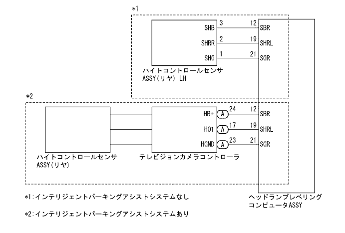
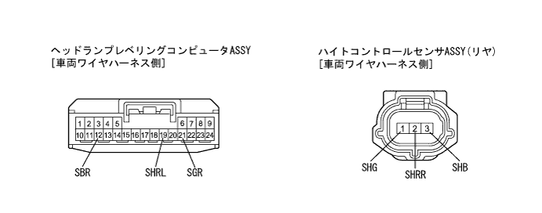
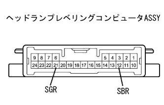
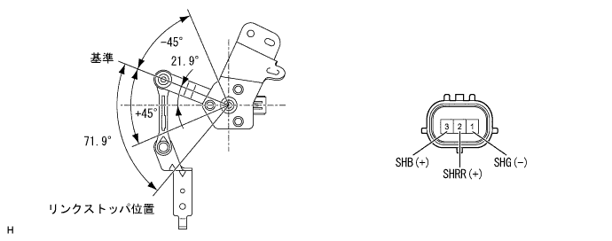
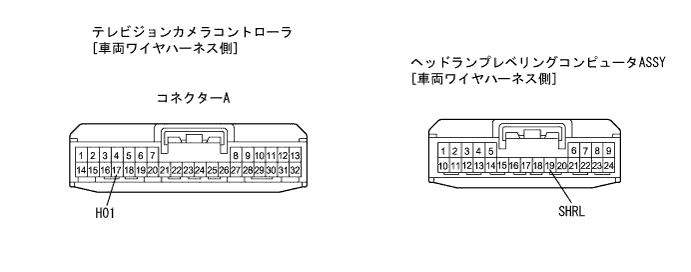

DTC B2416 Height Control Sensor Malfunction |
| DTC No. | Diagnosis Description | Inspection Area |
|---|---|---|
| B2416 |
|
|

)| Step 1 | Vehicle Check |
Check the vehicle specifications.
| Result | Proceed to |
|---|---|
| w/o intelligent parking assist system | A |
| w/ intelligent parking assist system | B |
|
| ||||
| A | |
| Step 2 | Read TaSCAN Data |
Using SST (TaSCAN), follow the prompts on the screen to display the "ECU Data Monitor" screen and check the computer data.
| Item Name (Symbol) | Item Description/Display Range | Standard Value | Remarks |
|---|---|---|---|
| Height Sensor Voltage (SBR) | Power source voltage to height sensor Display range: 0 to 5 V | Approx. 5 V | - |
| Rr Height Sensor (SHR) | Voltage value from rear height sensor Display range: 0 to 5 V | Approximately 2.5 V at standard vehicle height | - |
| Result | Proceed to |
|---|---|
| NG | A |
| OK | B |
|
| ||||
| A | |
| Step 3 | Inspect Wire Harness and Connector (Headlight Leveling Computer Assembly - Height Control Sensor Assembly (Rear)) |
for reference.Disconnect the headlight leveling computer assembly connector and height control sensor assembly (rear), RH connector.
Using SST (Toyota electrical tester), measure the resistance between the terminals of the vehicle side wire harness connectors.

| Tester Connection (Terminal Symbol) | Condition | Standard |
|---|---|---|
| 12(SBR) - 3(SHB) | Always | Below 1 Ω |
| 19(SHRL) - 2(SHRR) | Always | Below 1 Ω |
| 21(SGR) - 1(SHG) | Always | Below 1 Ω |
Using SST (Toyota electrical tester), measure the resistance between each terminal of the vehicle side wire harness connector and body ground.
| Tester Connection (Terminal Symbol) | Condition | Standard |
|---|---|---|
| 12 (SBR) - Body ground | Always | 10 kΩ or higher |
| 19 (SHRL) - Body ground | Always | 10 kΩ or higher |
| 21 (SGR) - Body ground | Always | 10 kΩ or higher |
|
| ||||
| OK | |
| Step 4 | Inspect Headlight Leveling Computer Assembly |
 |
Connect the headlight leveling computer assembly connector.
Using SST (Toyota electrical tester), measure the voltage between the terminals from the back side of the connector.
| Tester Connection (Terminal Symbol) | Condition | Standard |
|---|---|---|
| 12(SBR) - 21(SGR) | IG ON | 4.75 to 5.25 V |
|
| ||||
| OK | |
| Step 5 | Inspect Height Control Sensor Sub-assembly Rear |
Height Control Sensor Assembly (Rear) Voltage Inspection (Drive Type 2WD)

Connect 3 dry cell batteries (1.5V) in series.
Connect the battery positive to terminal 3 (SHB) of the connector and the battery negative to terminal 1 (SHG), and apply a voltage of 4.5V between terminals 3 (SHB) and 1 (SHG).
Using SST (Toyota electrical tester), with voltage applied, measure the voltage between each terminal when the link is slowly moved up and down.
| Tester Connection (Terminal Symbol) | Link Angle (Vehicle Height) | Standard |
|---|---|---|
| 2(SHRR) - 1(SHG) | +30° (High) | Approx. 3.45V |
| 2(SHRR) - 1(SHG) | 0° (Standard) | Approx. 2.25V |
| 2(SHRR) - 1(SHG) | -30° (Low) | Approx. 1.05V |
Height Control Sensor Assembly (Rear) Voltage Inspection (Drive Type 4WD)

Connect 3 dry cell batteries (1.5V) in series.
Connect the battery positive to terminal 3 (SHB) of the connector and the battery negative to terminal 1 (SHG), and apply a voltage of 4.5V between terminals 3 (SHB) and 1 (SHG).
Using SST (Toyota electrical tester), with voltage applied, measure the voltage between each terminal when the link is slowly moved up and down.
| Tester Connection | Link Angle (Vehicle Height) | Standard |
|---|---|---|
| 2(SHRR) - 1(SHG) | +45° (High) | Approx. 4.05V |
| 2(SHRR) - 1(SHG) | 0° (Standard) | Approx. 2.25V |
| 2(SHRR) - 1(SHG) | -45° (Low) | Approx. 0.45V |
|
| ||||
| OK | ||
| ||
| Step 6 | Read DTC |
Using SST (TaSCAN), check the DTC output status on the IPA screen.
| Result | Proceed to |
|---|---|
| When neither DTC "C1627" nor "C1628" is output | A |
| When DTC "C1627" or "C1628" is output | B |
|
| ||||
| A | |
| Step 7 | Read TaSCAN Data |
Using SST (TaSCAN), follow the prompts on the screen to display the "ECU Data Monitor" screen and check the computer data.
| Item Name (Symbol) | Item Description/Display Range | Standard Value | Remarks |
|---|---|---|---|
| Rr Height Sensor (SHR) | Rear height sensor voltage Display range: 0 to 5 V | Approximately 2.5 V at standard vehicle height | - |
| Result | Proceed to |
|---|---|
| NG | A |
| OK | B |
|
| ||||
| A | |
| Step 8 | Inspect Wire Harness and Connector (Headlight Leveling Computer Assembly - Television Camera Controller) |
for reference.Disconnect the headlight leveling computer assembly connector and television camera controller connector A.
Using SST (Toyota electrical tester), measure the resistance between the terminals of the vehicle side wire harness connectors.

| Tester Connection (Terminal Symbol) | Condition | Standard |
|---|---|---|
| A17(H01) - 19(SHRL) | Always | Below 1 Ω |
Using SST (Toyota electrical tester), measure the resistance between each terminal of the vehicle side wire harness connector and body ground.
| Tester Connection (Terminal Symbol) | Condition | Standard |
|---|---|---|
| A17 (H01) - Body ground | Always | 10 kΩ or higher |
|
| ||||
| OK | |
| Step 9 | Replace Television Camera Controller |
Replace the television camera controller. (see)
| NEXT | |
| Step 10 | Recheck DTC |
Using SST (TaSCAN), recheck the DTCs.
| Result | Proceed to |
|---|---|
| No DTC output | A |
| DTC "B2416" is output | B |
|
| ||||
| A | ||
| ||